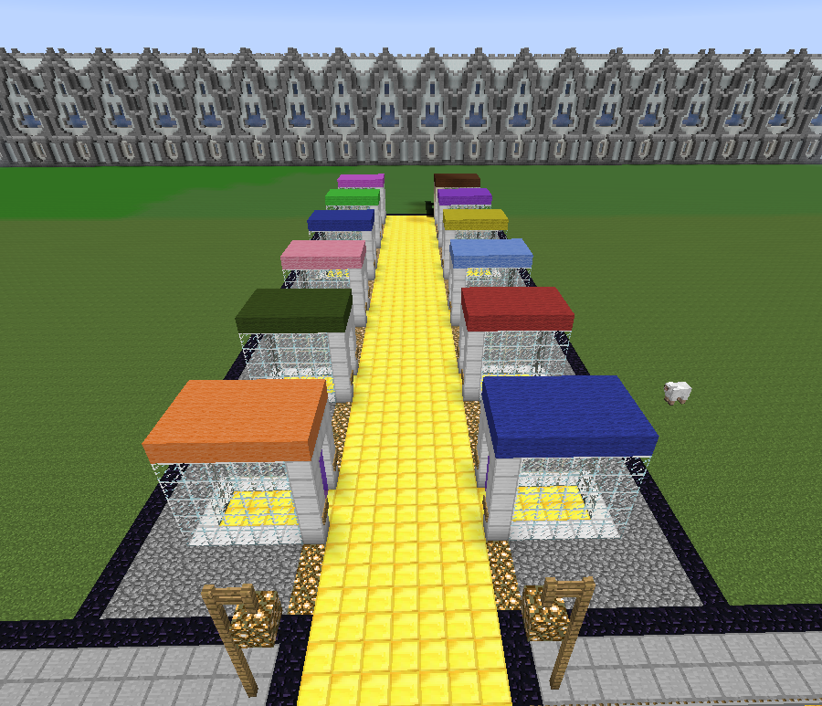

What are we?
Welcome Minecrafters!
Fairfield County Minecraft is a Minecraft server cooperative run by participating libraries throughout Fairfield County, Connecticut. The server is hosted and managed by Darien Library. The purpose of this server cooperative is to provide a safe, enjoyable, and community-focused environment for Minecraft players (between the ages of 8 and 18) throughout the county to gather, build, collaborate, and sometimes be blown up by creepers. If you live in a participating town, all you need is a Minecraft account and a library card to get started.
What kind of server is it?
It's the fun kind! Actually, you're probably asking, "Is it creative or survival?". Right now it is all survival maps because we want you to be challenged a little. However, we definitely have plans on making a creative world where you can build to your heart's content. We're always adding new stuff too. We have mini games, parkour, survival games, and much more is planned. There is one world where players can build cooperatively, no matter what town they are from, but in addition to that, every town has its own world where only residents of that town can build. You can go visit all the other towns' worlds if you like, however, and players often do. For the brave or foolhardy, the Nether awaits where PvP is allowed. And if your fellow Minecrafters don't get you, the lava and withers just might.
Which libraries are participating?
We intend WORLD DOMINATION! Just kidding, but we would love it if every town in Fairfield County participated. We're not quite there yet. As of now, if you live in one of these towns, you're in luck: Brookfield, Darien, New Canaan, New Fairfield, Newtown, Norwalk, Weston, Westport, Wilton.
If your town is not on that list, there is still hope! Visit your local library and tell them about us. It's super easy to join and be a part of the awesomeness. We even have a page on this website that can help your hometown library figure out how to participate (SPOILER: it's totally easy).
If I have questions, who should I ask?
If you live in a town whose library participates, feel free to call on your local library and they can probably answer most questions. Otherwise, John Blyberg, the server admin at Darien Library, is always happy to help.
What's New?
{% for post in site.categories.news limit: 1 %}{{ post.date | date: "%B %e, %Y"}}
{{ post.title }}
Currently Online:

Who's on?
Archive
-
{% for post in site.posts %}
- {{ post.date | date_to_string }} » {{ post.title }} {% endfor %}
Boom.